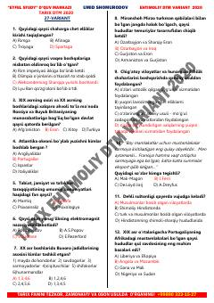

EDTarix fanidan DTM testlariga tayyorgarlik ko'rish uchun ehtimoliy savollar to'plami.
Ushbu qo'llanma tarix fanidan DTM imtihonlariga tayyorlanayotgan abituriyentlar uchun ehtimoliy test variantlari va savollarini o'z ichiga oladi. Kitobda jahon tarixi va O'zbekiston tarixi bo'yicha turli davrlarni qamrab olgan test topshiriqlari berilgan.